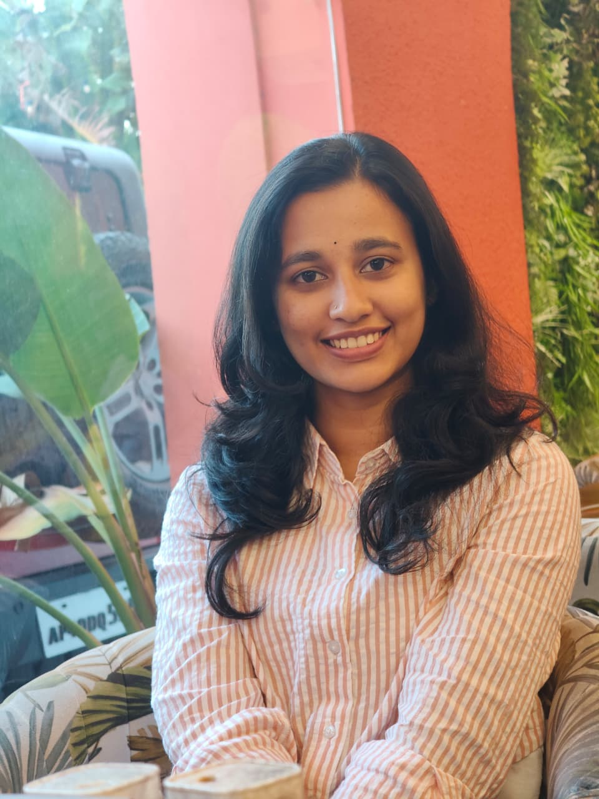

Hello! I'm Sai Likhitha, an academic enthusiast currently deeply immersed in my post-graduation studies at Andhra University. My fascination with computing systems and their structural dynamics led me to specialize in network protocols and cybersecurity infrastructures.
I enjoy breaking down complex network architectures and building robust defenses against cyber threats. My approach blends theoretical rigor with hands-on experimentation — from cryptographic analysis to penetration testing and digital forensics.
Beyond academics, I'm driven by a curiosity to understand how systems fail, so I can engineer ones that don't. Every vulnerability is a lesson; every secured system is a win.